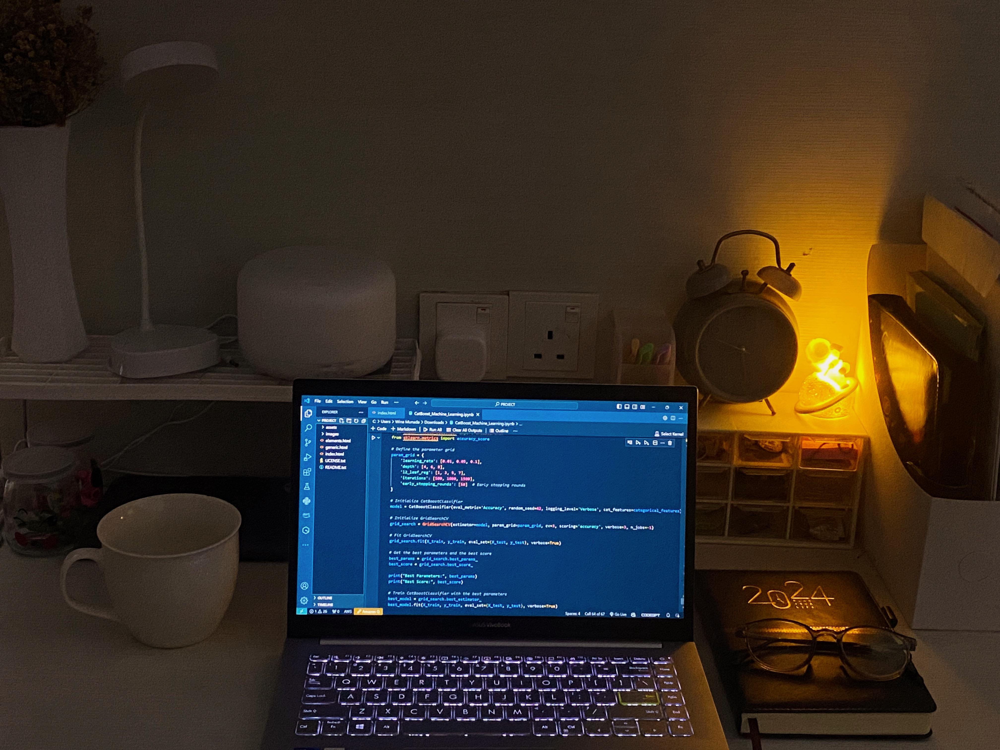

Let's get to know
Wina Munada
I am a dedicated computer science professional specializing in Data Science and Agentic AI Development.
With a strong foundation in machine learning, autonomous agent architecture, and enterprise-grade AI solutions,
I transform complex problems into intelligent, automated workflows.

Professional Journey
My career has evolved across multiple dimensions of AI and data science. I started with traditional machine learning and data analysis, but have now specialized in Agentic AI—a cutting-edge field focused on building autonomous intelligent agents that can perform complex business processes with minimal human intervention.
Agentic AI Development
As an Agentic AI Developer, I architect and deploy autonomous agent solutions across enterprise systems:
- AI Finance Agents: Automating accounts payable/receivable, reconciliation, and financial reporting with intelligent decision-making
- AI HR Agents: Streamlining rostering, payroll, recruitment, and leave management through autonomous workflows
- AI Sales & Data Analyzers: Predictive analytics, customer behavior clustering, and revenue forecasting
- AI Procurement Agents: Intelligent supplier discovery, smart negotiation, and contract analysis
- AI Inventory Agents: Real-time stock monitoring, demand forecasting, and warehouse optimization
- AI Policy Control Systems: Version control, compliance monitoring, and automated policy distribution
Technical Expertise
Programming Languages
Python, R, C, Java, JavaScript, SQL, HTML, CSS
ML & AI Frameworks
TensorFlow, Keras, PyTorch, scikit-learn, Pandas, NLTK
DevOps & Cloud
Fly.io, Upsun, AWS, Docker, CI/CD Pipelines, RESTful APIs
Systems & Integration
Oracle, Ubuntu, System Integration, API Integration, Microservices
Education & Specialization
I am a Computer Science student specializing in Data Science at Albukhary International University, Malaysia. My academic foundation combined with practical AI development experience allows me to bridge theory and real-world implementation.
Beyond Code
Outside of my professional work, I love exploring new places and planning trips—a skill that has honed my organizational abilities and budgeting expertise. These journeys help me experience different cultures, meet new people, and gain fresh perspectives that enrich both my personal growth and creative problem-solving in tech.
Explore My Work
Curious about my agentic AI projects? Visit my Agentic AI portfolio to see live demonstrations of intelligent automation in action.